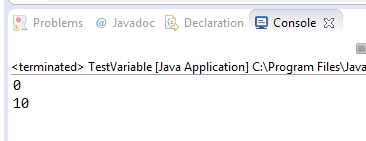
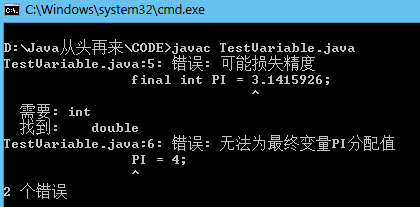

变量（variable）变量在使用前必须对其声明，只有在变量声明以后才能为其分配相应长度的存储单元.
type varName [=value];//建议使用
type varName1[=value1], varName2[=value2];
局部变量
在方法或者语句块内部定义的变量
在使用前必须先声明和初始化（赋初值）
实例变量（成员变量）
方法外部、类的内部定义的变量
如果不进行初始化，它会自动初始化为该类型的默认初值（数值型：0或者0.0；字符型：16位的0；布尔型：false）
package org.phn;public class TestVariable { static int t;//实例变量（成员变量） public static void main(String[] args) { int a=10;//局部变量 System.out.println(t); System.out.println(a); }}

常量：
final 声明表示只能被初始化一次
实例：
class TestVariable{ public static void main(String[] args) { final int PI = 3.1415926; PI = 4; System.out.println(PI); }}

常量命名一般使用大写字母和下划线。
变量命名一般首字母小写和驼峰原则。
类名一般首字母大写和驼峰原则。